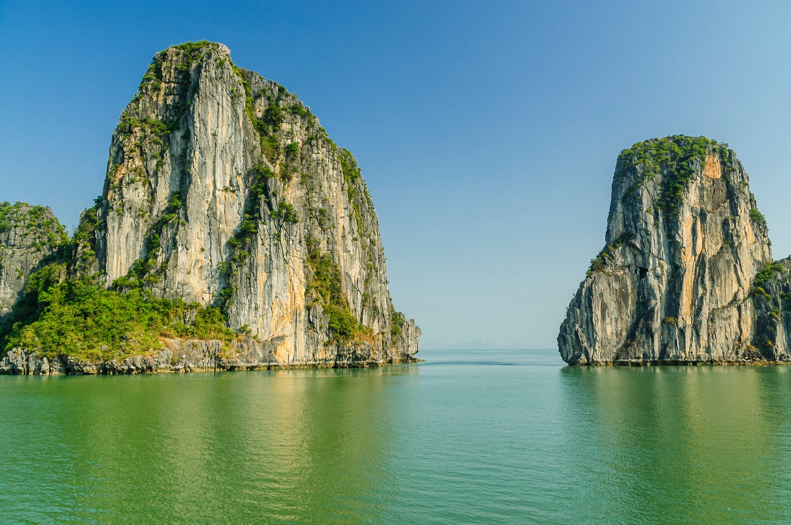
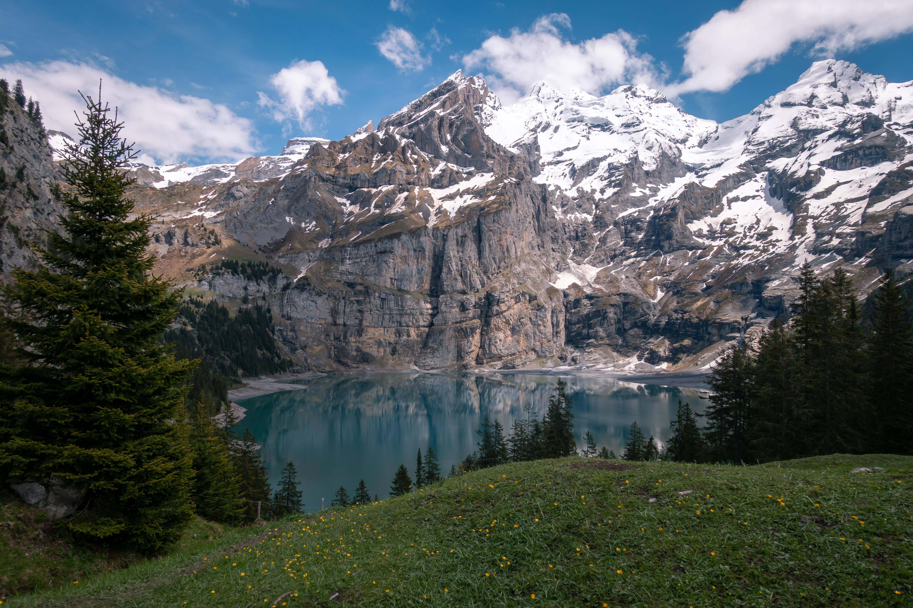
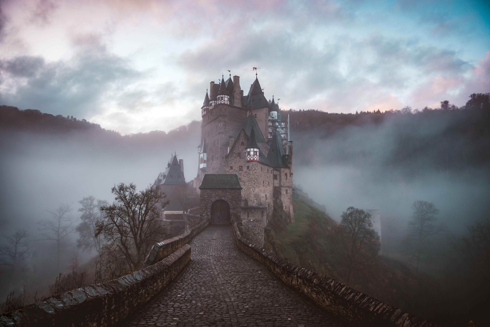
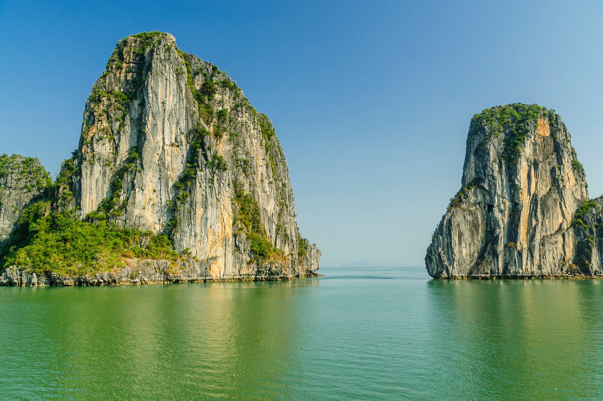
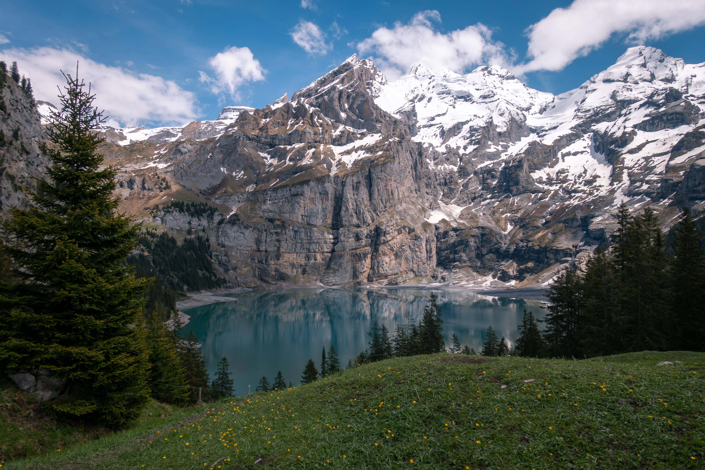
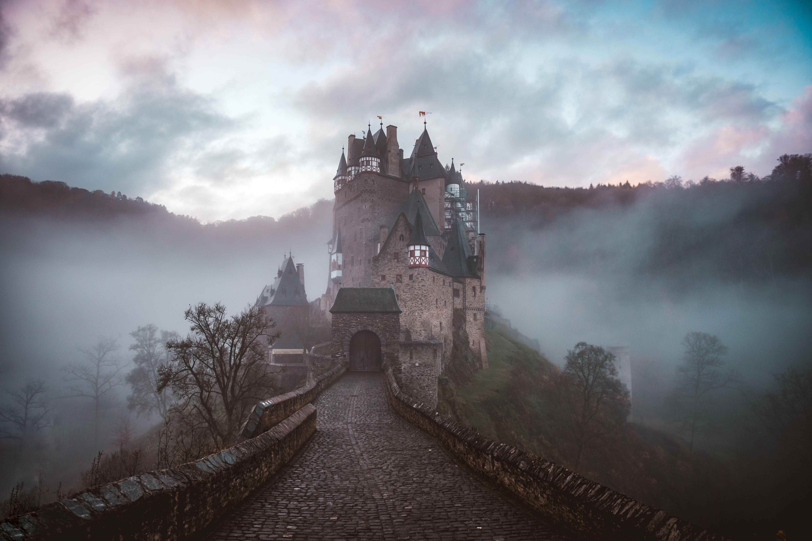
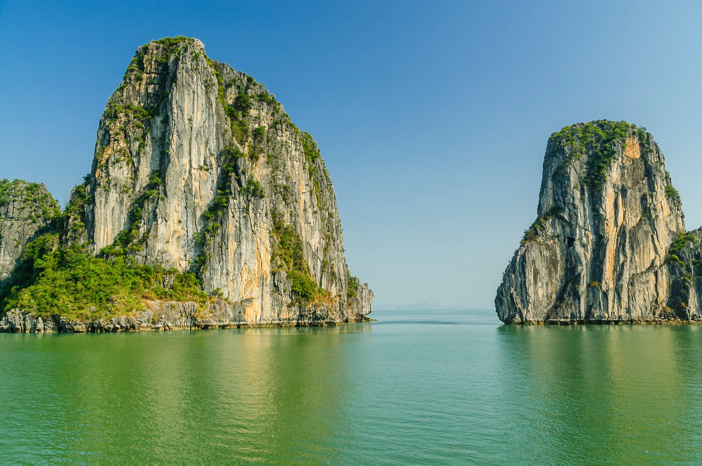
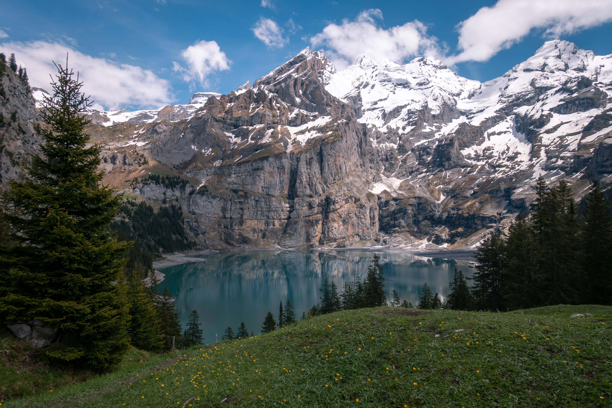
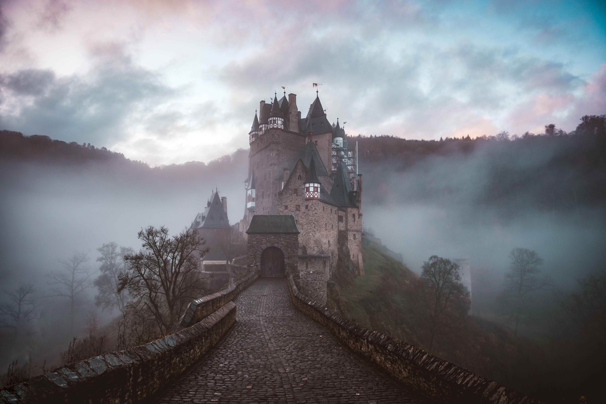
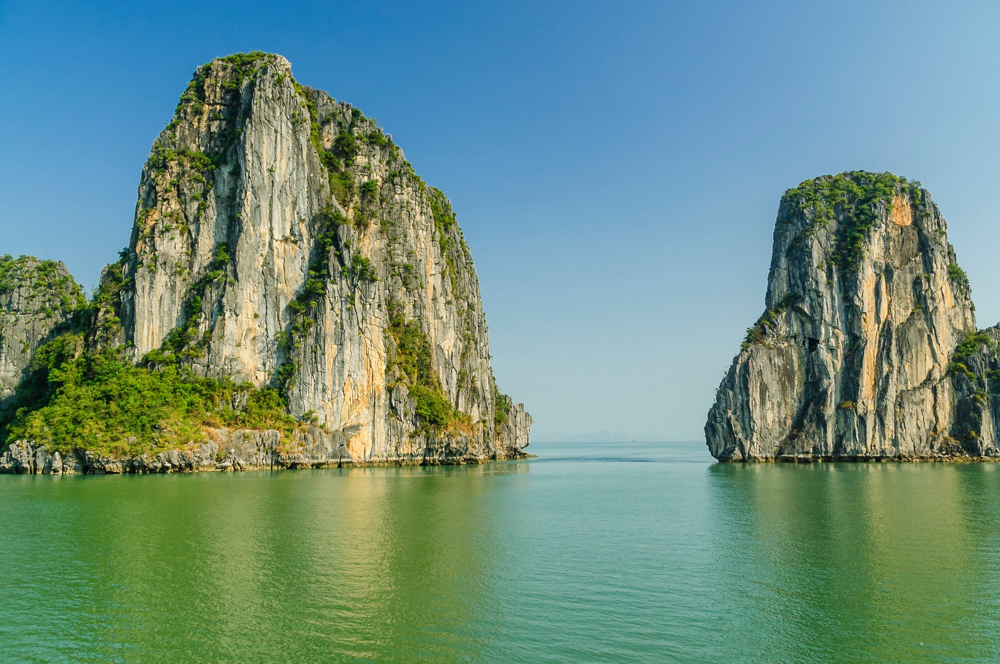
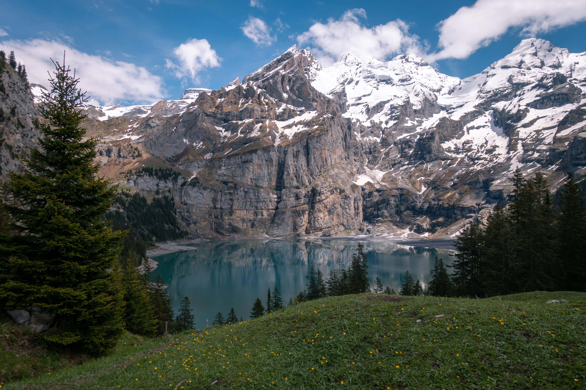
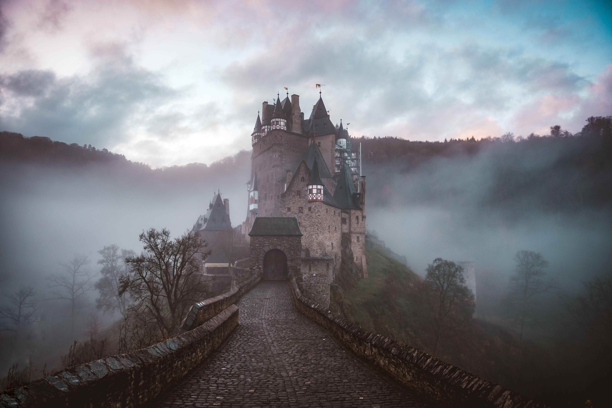
Moraine Lake is a breathtaking glacially fed lake located in Banff National Park, Canada. The lake is famous for its stunning turquoise-blue color, which is created by the rock flour that is carried into the lake by the glacier meltwater. Surrounded by towering mountains and dense forests, Moraine Lake is a popular destination for hiking, camping, fishing, and canoeing. Visitors can explore the lake's shores and take in the panoramic views from various hiking trails, including the famous Rockpile Trail.During the summer months, the lake is often crowded with tourists.
Eltz Castle is a stunning medieval castle located in the hills above the Moselle River in Germany. Built in the 12th century, the castle has remained in the hands of the same family for over 850 years and is considered one of the best-preserved castles in the country. The castle's unique location on a rock outcropping surrounded by trees gives it a fairy-tale appearance.Visitors can take a guided tour of the castle to learn about its history and explore its many rooms and chambers, including a medieval kitchen, a knight's hall, and a chapel.
Vernazza is one of the five towns that make up the Cinque Terre, a UNESCO World Heritage Site located on the Italian Riviera. Known for its colorful houses, picturesque harbor, and rugged coastline, Vernazza is a popular destination for tourists seeking a taste of authentic Italian culture. Visitors can explore the town's narrow streets and alleys, sample local seafood dishes, and take in stunning views of the Mediterranean Sea.Whether you're seeking adventure or relaxation, Vernazza and the Cinque Terre offer a unique and unforgettable experience.
Halong Bay is a stunning natural wonder located in northeastern Vietnam. Comprising of thousands of limestone islands and islets, the bay boasts clear blue waters and dramatic cliffs, making it a popular destination for tourists and locals alike. Visitors can explore the bay's beauty by taking a traditional wooden junk boat tour or kayaking through the islands. Along the way, travelers can visit floating fishing villages, caves, and hidden beaches. Halong Bay is also home to a diverse ecosystem of wildlife, including monkeys, langurs, and rare bird species.
Hey there, it's BoJack Horseman.I explore new destinations and share my unique perspectives on the world around us. From the bustling streets of New York to the serene beaches of Hawaii, let's hit the road together and see what adventures await!

Hey there, I'm Bart Simpson - your favorite troublemaker turned travel blogger!. My love for exploring new places is just as big. Whether I'm wandering through the colorful streets of New Orleans or hiking the breathtaking mountains of Switzerland, I'm always on the lookout for my next adventure
Hey hey hey! It's your favorite donut-loving traveler, Homer Simpson! Join me as I embark on wild and wacky adventures around the world, from the majestic mountains of Switzerland to the sunny beaches of the Bahamas.